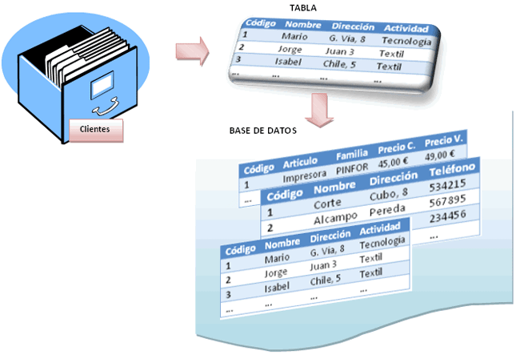

App 10 Proyecto Final Incursion a las BD
 4
4Datos del desarrollador
Nombre del alumno: Juan Eduardo Flores Martínez
Grupo: "G"
Semestre: 4to
Submodulo: Desarrolla Aplicaciones Moviles
Nombre del docente: Jose Antonio Gomez Hernandez

Nombre del alumno: Juan Eduardo Flores Martínez
Grupo: "G"
Semestre: 4to
Submodulo: Desarrolla Aplicaciones Moviles
Nombre del docente: Jose Antonio Gomez Hernandez
La primera vez que se escuchó el término base de datos fue en un congreso celebrado en California en 1963.
Sus orígenes provienen de la antigüedad, donde ya existían bibliotecas y toda clase de registros, también la utilizaban para recoger información sobre las cosechas.
Se empezaron a desarrollar cuando emepezó a ser necesario almacenar grandes cantidades de información o datos. El concepto de bases de datos siempre ha estado ligado a la informática.
Se define una base de datos (BD) como una serie de datos organizados y relacionados entre sí, los cuales son recolectados y explotados por los sistemas de información de una empresa o negocio en particular.
Desde el punto de vista informático, la base de datos es un sistema formado por un conjunto de datos almacenados en discos que permiten el acceso directo a ellos y un conjunto de programas que manipulen ese conjunto de datos.
Cada base de datos se compone de una o más tablas que guarda un conjunto de datos. Cada tabla tiene una o más columnas y filas. Las columnas guardan una parte de la información sobre cada elemento que queramos guardar en la tabla, cada fila de la tabla conforma un registro.
Aqui vemos la estructura basica de las BD
Independencia lógica y física de los datos.
Redundancia mínima.
Acceso concurrente por parte de múltiples usuarios.
Integridad de los datos.
Consultas complejas optimizadas.
Seguridad de acceso y auditoría.
Respaldo y recuperación.
Acceso a través de lenguajes de programación estándar.
1.- Haga clic en la pestaña Archivo, en Nuevo y luego, en Base de datos en blanco.
2.-Escriba un nombre de archivo en el cuadro Nombre de archivo. Para cambiar la ubicación predeterminada del archivo, haga clic en Buscar una ubicación donde colocar la base de datos Imagen del botón (junto al cuadro Nombre de archivo), vaya a la nueva ubicación y haga clic en Aceptar.
3.-Haga clic en Crear.
Access crea la base de datos con una tabla vacía denominada Tabla1 y, luego, abre esa tabla en la vista Hoja de datos. El cursor se coloca en la primera celda vacía de la columna Haga clic para agregar.
4.-Comience a escribir para agregar datos o puede pegar datos de otro origen, tal y como se describe en la sección Copiar los datos de otro origen en una tabla de Access.
1.-En la pestaña Archivo, haga clic en Abrir.
2.-En el cuadro de diálogo Abrir, vaya a la base de datos que quiere abrir.
3.-Siga uno de estos procedimientos:
Haga doble clic en la base de datos para abrirla en el modo predeterminado que se especifique en el cuadro de diálogo Opciones de Access o el modo que haya establecido una directiva administrativa.
Haga clic en Abrir para abrir la base de datos con acceso compartido en un entorno multiusuario para que usted y otros usuarios puedan leer y escribir en la base de datos.
Haga clic en la flecha situada junto al botón Abrir y luego en Abrir en modo solo lectura para abrir la base de datos con acceso de solo lectura de modo que pueda verla pero no editarla. Otros usuarios aún pueden leer y escribir en la base de datos.
Haga clic en la flecha situada junto al botón Abrir y luego en Abrir en modo solo lectura para abrir la base de datos con acceso exclusivo. Cuando tiene una base de datos abierta con acceso exclusivo, cualquier persona que intente abrir la base de datos recibirá un mensaje que indica que "el archivo ya está en uso".
Haga clic en la flecha situada junto al botón Abrir y luego en Abrir en modo exclusivo de solo lectura para abrir la base de datos con acceso de solo lectura. Otros usuarios aún pueden abrir la base de datos, pero están limitados al modo de solo lectura.
Se puede cerrar una base de datos de varias formas:
En la pestaña Archivo, elegir la opción Cerrar base de datos Cerrar base de datos.
O bien cerrar Access. Obviamente la base también se cerrará.
1.-En el grupo Tablas de la pestaña Crear, haga clic en Diseño de la tabla.
2.-Para cada campo de la tabla, escriba un nombre en la columna Nombre de campo y seleccione un tipo de datos en la lista Tipo de datos.
Si quiere, puede escribir una descripción de cada campo en la columna Descripción. La descripción se muestra después en la barra de estado de la vista Hoja de datos al situar el cursor en ese campo. La descripción también sirve como texto de la barra de estado para los controles de un formulario o informe que se cree arrastrando un campo del panel Lista de campos, así como para los controles que se creen para ese campo al usar el Asistente para formularios o el Asistente para informes.
3.-Tras haber agregado todos los campos, guarde la tabla:
4.-En la pestaña Archivo, haga clic en Guardar.
Cuando quiera comenzar a escribir datos en la tabla, cambie a la vista Hoja de datos y haga clic en la primera celda vacía. También puede pegar datos de otro origen, tal y como se describe en la sección Copiar los datos de otro origen en una tabla de Access.

En este capítulo se describen palabras clave y sentencias SQL específicas que se utilizan en las consultas SQL de QMF.
AÑADIR
El usuario puede añadir columnas a una tabla sólo si él mismo ha creado la tabla o si está autorizado específicamente para hacerlo.
ALL
Generalmente, una subconsulta devuelve un solo valor. Sin embargo, es posible que una consulta devuelva un conjunto de valores. Con ALL, se ha de cumplimentar cada valor del conjunto devuelto.
ALTER TABLE
El usuario puede modificar una tabla sólo si él mismo ha creado la tabla o si está autorizado específicamente para hacerlo. La sentencia ALTER TABLE especifica la tabla existente que ha de modificarse.
AND
Puede seleccionar filas según múltiples condiciones conectadas mediante AND u OR.
ANY
Generalmente, una subconsulta devuelve un solo valor. Sin embargo, es posible que una consulta devuelva un conjunto de valores.
Cada campo de una tabla dispone de una serie de características que proporcionan un control adicional sobre la forma de funcionar del campo.
Las propiedades aparecen en la parte inferior izquierda de la Vista Diseño cuando tenemos un campo seleccionado.
Las propiedades se agrupan en dos pestañas, la pestaña General donde indicamos las características generales del campo y la pestaña Búsqueda en la que podemos definir una lista de valores válidos para el campo. Esta última ya ha sido explicada en un avanzado del tema de creación de tablas, de forma que en esta unidad profundizaremos en la primera.
Las propiedades de la pestaña General pueden cambiar para un tipo de dato u otro mientras que las propiedades de la pestaña Búsqueda cambian según el tipo de control asociado al campo.
Hay que tener en cuenta que si se modifican las propiedades de un campo después de haber introducido datos en él se pueden perder estos datos introducidos.
Las relaciones en una base de datos son el pilar fundamental en la construcción de bases de datos relacionales, permite establecer las concordancias, asignaciones y relación entre las entidades o tablas, así mismo permite garantizar la integridad referencial de los datos. Con el fin de mantener la lógica y consistencia de los mismos.
Permiten evitar la duplicidad de registros.
1.- En el grupo Consultas de la pestaña Crear, haga clic en Asistente para consultas. Si usa Access 2007, haga clic en Crear > Otros > Asistente para consultas.
El grupo Consultas de la cinta de Access incluye dos opciones: Asistente para consultas y Diseño de consulta
2.-En el cuadro de diálogo Nueva consulta, haga clic en Asistente para consultas y en Aceptar.
3.-A continuación, agregue campos. Puede agregar hasta 255 campos de 32 tablas o consultas.
Para cada campo, realice estos dos pasos:
A)En Tablas/Consultas, haga clic en la tabla o consulta que contiene el campo.
B)En Campos disponibles, haga doble clic en el campo para agregarlo a la lista de Campos seleccionados. Si desea agregar todos los campos a la consulta, haga clic en el botón con el corchete angular derecho doble (>>).
C)Cuando haya agregado todos los campos que desee, haga clic en Siguiente.
4.-Si no ha agregado campos numéricos (campos que contienen datos numéricos), vaya al paso 9. Si ha agregado campos numéricos, el asistente le preguntará si desea que la consulta devuelva detalles o datos de resumen.
Siga uno de estos pasos:
A)Si desea ver registros individuales, haga clic en Detalles y, después, en Siguiente. Vaya al paso 9.
B)Si desea ver datos numéricos resumidos, como promedios, haga clic en Resumen y, después, en Opciones de resumen.
5.-En el cuadro de diálogo Opciones de resumen, especifique los campos que desea resumir y cómo desea resumir los datos. Solo se muestran los campos numéricos.
6.-Haga clic en Aceptar para cerrar el cuadro de diálogo Opciones de resumen.
7.-Si no ha agregado un campo de Fecha y hora a la consulta, vaya al paso 9. Si ha agregado un campo de Fecha y hora a la consulta, el Asistente para consultas le preguntará cómo desea agrupar los valores de fechas. Por ejemplo, suponga que agrega a la consulta un campo numérico, como "Precio", y un campo de fecha y hora, como "Fecha de la transacción". A continuación, especifica en el cuadro de diálogo Opciones de resumen que desea ver el valor promedio del campo "Precio". Como ha incluido un campo de fecha y hora, puede calcular valores de resumen para cada valor único de fecha y hora, para cada día, mes, trimestre o año.
9.-En la última página del asistente, agregue un título a la consulta, especifique si desea abrirla o modificarla y, a continuación, haga clic en Finalizar.
Si elige abrir la consulta, esta muestra los datos seleccionados en la vista Hoja de datos. Si elige modificar la consulta, esta se abre en la vista Diseño.
La normalización de Base de Datos, es el proceso de organizar los datos en una base de datos que incluye la creación de tablas y el establecimiento de relaciones entre ellas.
Este proceso es utilizado para ayudar a eliminar los datos redundantes.
La primera forma normal significa que los datos están en un formato de entidad, lo que significa que se han cumplido las siguientes condiciones:
Eliminar grupos repetidos en tablas individuales
Crear una tabla independiente para cada conjunto de datos relacionados
Identificar cada conjunto de relacionados con la clave principal
No utilice varios campos en una sola tabla para almacenar datos similares
La segunda forma normal asegura que cada atributo describe la entidad
Crear tablas separadas para el conjunto de valores y los registros múltiples, estas tablas se deben relacionar con una clave externa.
Los registros no deben depender de otra cosa que la clave principal de la tabla, incluida la clave compuesta si es necesario
La tercera forma normal comprueba las dependencias transitivas, eliminando campos que no dependen de la clave principal.
Los valores que no dependen de la clave principal no pertenecen a la tabla
Los campos que no pertenecen a la clave principal colóquelos en una tabla aparte y relacionen ambas tablas por medio de una clave externa.
Una clave primaria es la columna o colección de columnas que identifican de forma única a una fila determinada en una tabla. La clave primaria proporciona una forma importante de distinguir una fila de otra. Subrayar las columnas o la colección de columnas que componen la clave primaria usualmente es la mejor forma de representar la clave primaria de cada tabla de la base de datos.
Existen tres tipos de claves primarias; una clave natural es una clave primaria compuesta de una columna que identifica de forma única a una entidad, por ejemplo el número de seguridad social de una persona o el número de identificación vehicular (VIN, Vehicle Identification Number en inglés) de un vehículo. Una clave artificial es una columna creada para una entidad con el propósito de servir únicamente como clave primaria y es visible para los usuarios. Además, una clave subrogada es una clave primaria generada por el sistema, usualmente un tipo de datos numerado automáticamente que suele estar escondido del usuario.
En el contexto de bases de datos relacionales, una clave foránea o clave ajena (o Foreign Key FK) es una limitación referencial entre dos tablas. La clave foránea identifica una columna o grupo de columnas en una tabla (tabla hija o referendo) que se refiere a una columna o grupo de columnas en otra tabla (tabla maestra o referenciada). Las columnas en la tabla referendo deben ser la clave primaria u otra clave candidata en la tabla referenciada.
Respecto a integridad referencial podemos decir de manera simple que integridad referencial significa que cuando un registro en una tabla haga referencia a un registro en otra tabla, el registro correspondiente debe existir.
Para poder establecer una relación entre dos tablas, es necesario asignar un campo en común a las dos tablas.